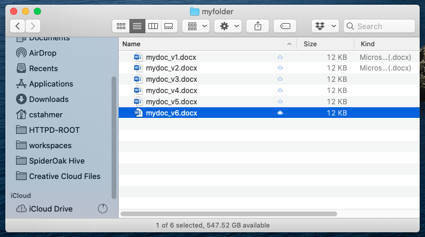
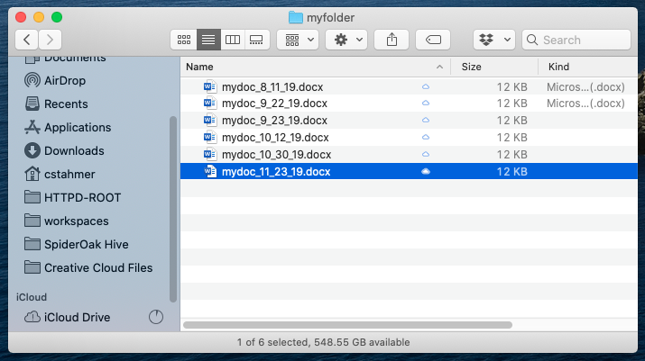
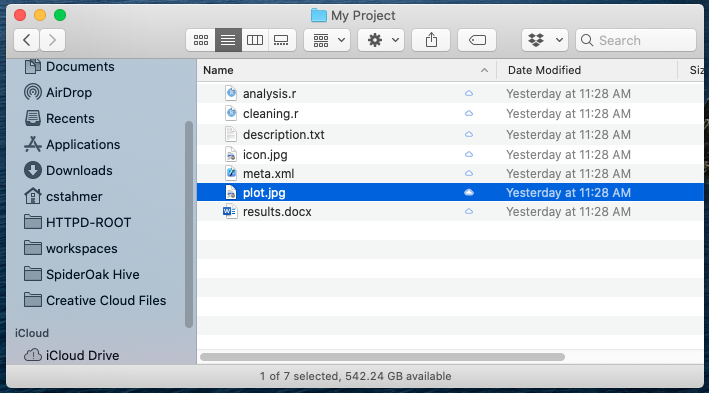
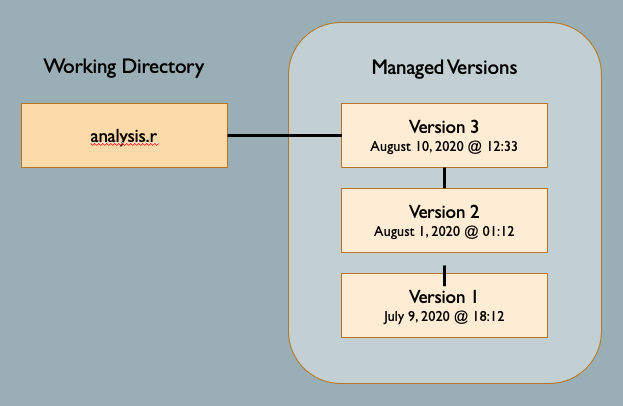
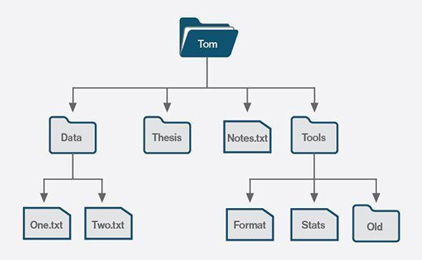

2. Version Control#
2.1. What is Version Control?#
Version control describes the process of storing and organizing multiple versions (or copies) of documents on your computer. Approaches to version control range from simple to complex and they can involve the use of both manual and automatic workflows. Ultimately, the overall goal of version control is to store and manage multiple versions of the same document(s).
Chances are good that you are already doing some kind of version control yourself. Most people have a folder/directory somewhere on their computer that looks something like this:

Or perhaps, this:

This is a rudimentary form of version control that relies completely on a manual workflow of saving multiple versions of a file. This system works minimally well, in that it provides you with a history of file versions theoretically organized by their time sequence. But this file system method offers no information about how the file has changed from version to version, why you might have saved a particular version, or specifically how the various versions are related. This self-managed file system approach is more subject to error than software-assisted version control systems; it is not uncommon for users to make mistakes when naming file versions, or to go back and edit files out of sequence. Software-assisted version control systems (VCS) such as Git were designed to solve this problem.
2.2. Software Assisted Version Control#
Version control software has its roots in the software development community, where it is common for many coders to work on the same file, sometimes synchronously, amplifying the need to track and understand revisions. But nearly all types of computer files, not just code, can be tracked using modern version control systems. IBM’s OS/360 IEBUPDTE software update tool is widely regarded as the earliest and most widely adopted precursor to modern, version control systems. Its release in 1972 of the Source Code Control System (SCCS) package marked the first, fully fledged system designed specifically for software version control.
Today’s marketplace offers many options when it comes to choosing a version control software system. They include systems such as Git, Visual Source Safe, Subversion, Mercurial, CVS, and Plastic SCM, to name a few. Each of these systems offers its twist on version control, differing sometimes in the area of user functionality, sometimes in how it handles things on the back-end, and sometimes both. This tutorial focuses on the Git VCS, but in the sections that follow we offer some general information about classes of version control systems to help you better understand how Git does what it does and to help you make more informed decisions about how to deploy it for you own work.
2.3. Local vs Server-based Version Control#
There are two general types of version control systems: local and server (sometimes called cloud) based systems. When working with a local version control system, all files, metadata, and everything associated with the version control system live on your local drive in a universe unto itself. Working locally is a perfectly reasonable option for those who work independently (not as part of a team), have no need to regularly share their files or file versions, and who have robust back-up practices for their local storage drive(s). Working locally is also sometimes the only option for projects involving protected data and/or proprietary code that cannot be shared.
Server-based VCS utilize software running on your local computer that communicates with a remote server (or servers) that store your files and data. Depending on the system being deployed, files and data may reside exclusively on the server and are downloaded to temporary local storage only when a file is being actively edited. Or, the system may maintain continuous local and remote versions of your files. Server-based systems facilitate team science because they allow multiple users to have access to the same files, and all their respective versions, via the server. They can also provide an important, non-local back-up of your files, protecting you from loss of data should your local storage fail.
Git is a free server-based version control system that can store files both locally and on a remote server. While the sections that follow offer a broader description of server-based version control, in this workshop we will focus only on using Git locally and will not configure the software to communicate with, store files on, or otherwise interact with a remote server. DataLab’s companion Git for Teams workshop focuses on using Git with the GitHub cloud service to capitalize on Git’s distributed version control capabilities.
Server-based version control systems can generally be segmented into two distinct categories: 1) Centralized Version Control Systems (Centralized VCS) and 2) Distributed Version Control Systems (Distributed VCS).
2.4. Central Version Control Systems#
Centralized VCS is the oldest and the predominant form of version control architecture worldwide. Centralized VCS implement a “spoke and wheel” architecture to provided server-based version control.
With the spoke and wheel architecture, the server maintains a centralized collection of file versions. Users utilize version control clients to “check-out” a file of interest to their local file storage, where they are free to make changes to the file. Centralized VCS typically restrict other users from checking out editable versions of a file if another user currently has the file checked out. Once the user who has checked out the file has finished making changes, they “check-in” their new version, which is then stored on the server from where it can be retrieved and “checked-out” by another user. Taken together, centralized VCS provide a very controlled and ordered universe that ensures file integrity and tracking of changes. However, this regulation comes at a cost: namely, it it reduces the ease with which multiple users can work simultaneously on the same file.
2.5. Distributed Version Control Systems#
Distributed VCS are not dependent on a central repository as a means of sharing files or tracking versions. Distributed VCS implement a network architecture (as opposed to the spoke and wheel of the centralized VCS as pictured above) to allow each user to communicate directly with every other user.
In distributed VCS, each user maintains their own version history of the files being tracked, and the VCS software communicates between users to keep the various local file systems in sync with each other. With this type of system, the local versions of two different users will diverge from each other if both users make changes to the file. This divergence will remain in place until the local repositories are synced, at which time the VCS stitches (or merges) the two different versions of the file into a single version that reflects the changes made by each individual, and then saves the stitched version of the file onto both systems as the current version. Various mechanisms can then be used to resolve the conflicts that may arise during this merge process. Distributed VCS offer greater flexibility and facilitate collaborative work, but a lack of understanding of the sync/merge workflow can cause problems. It is not uncommon for a user to forget to sync their local repository with the repositories of other team members and, as a result, work for extended periods of time on outdated files that don’t reflect their teammates and result in work inefficiencies and merge challenges.
2.6. The Best of Both Worlds#
An important feature of distributed VCS is that many users and organizations choose to include a central server as a node in the distributed network. This creates an hybrid universe in which some users will sync directly to each other while other users will sync through a central server.
Syncing with a cloud-based server provides an extra level of backup for your files and also facilitates communication between users. But treating the server as just another node on the network (as opposed to a centralized point of control) puts the control and flexibility back in the hands of the individual developer. For example, in a true centralized VCS, if the server goes down then nobody can check files in and out of the server, which means that nobody can work. But in a distributed VCS this is not an issue. Users can continue to work on local versions and the system will sync any changes when the server becomes available. Git, the focus of this tutorial, is a Distributed VCS. You can use Git to share and sync repositories directly with other users or through a central Git server such as GitHub or GitLab.
2.7. How VCS Manage Your Files#
Most users think about version control as a process of managing files. For
example, you might have a directory called My Project that holds several
files related to this project as follows:

One approach to managing changes to the above project files would be to store
multiple versions of each file as in the figure below for the file
analysis.r:

In fact, many VCS do exactly this. They treat each file as the minimum unit of data and simply save various versions of each file along with some additional information about the version. This approach can work reasonably well. However, it has limitations. First, this approach can unnecessarily consume space on the local storage device, especially if you are saving many versions of a very large file. It also has difficulty dealing with changes in file names, typically treating the same file with a new name as a completely new file, thereby breaking the chain of version history.
To combat these issues, good VCS don’t actually manage files at all. They manage directories. Distributed VCS like Git take this alternate approach to data storage that is directory, rather than file, based.
2.8. Graph-Based Data Management#
Git (and many other distributed VCS) manage your files as collections of data rather than collections of files. Git’s primary unit of management is the repository, or repo for short, which is aligned with your computer’s directory/folder structure. Consider, for example, the following file structure:

Here we see a user, Tom’s, home directory, which contains three sub directories
(Data, Thesis, and Tools) and one file (Notes.txt). Both the Data and
Tools directories contain sub files and/or directories. If Tom wanted to
track changes to the two files in the Data directory, he would first create a
Git repository by placing the Data directory under version control.
When a repository is created, the Git system writes a collection of hidden files into the data directory that it uses to store information about all of the data that lives under that directory. This includes information about the addition, renaming, and deletion of both files and folders as well as information about changes to the data contained in the files themselves. Additions, deletions and versions of files are tracked and stored not as copies of files, but rather as a set of instructions that describes changes made to the underling data and the directory structure that describes them.